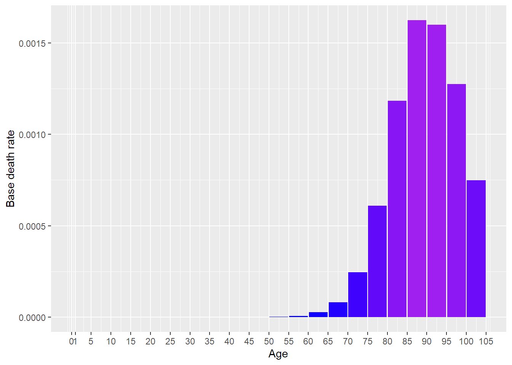
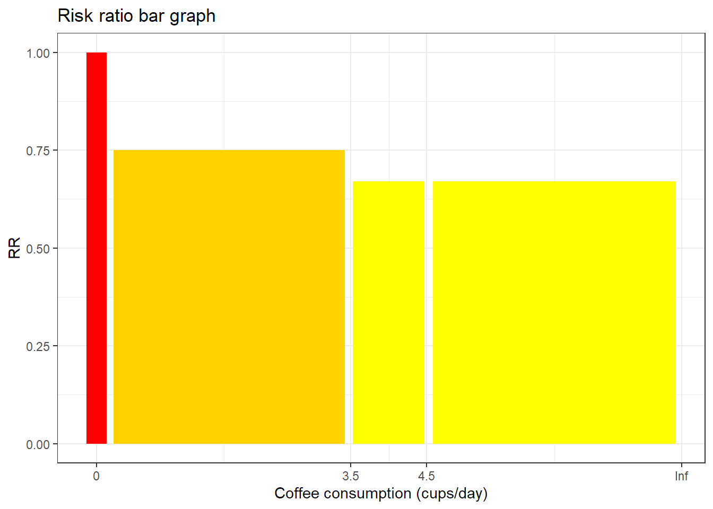
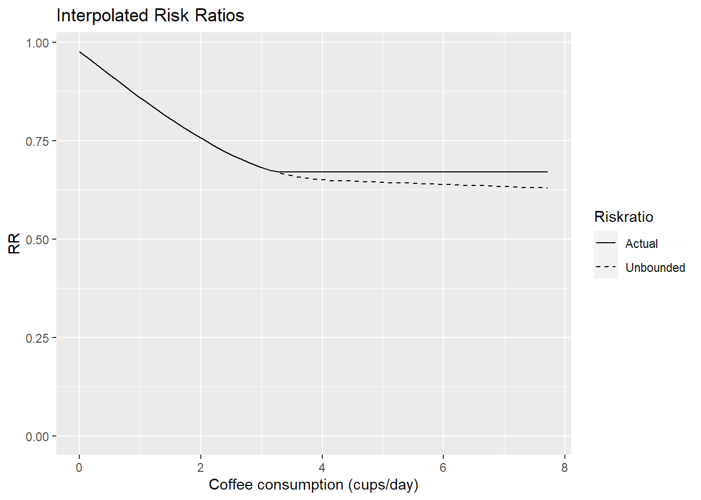
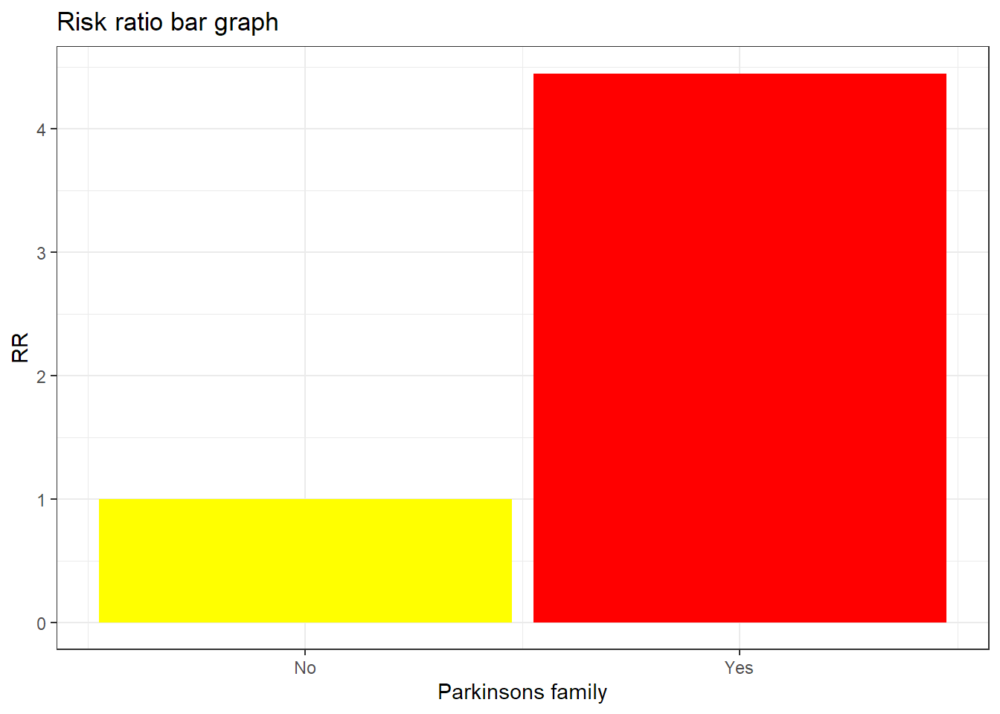
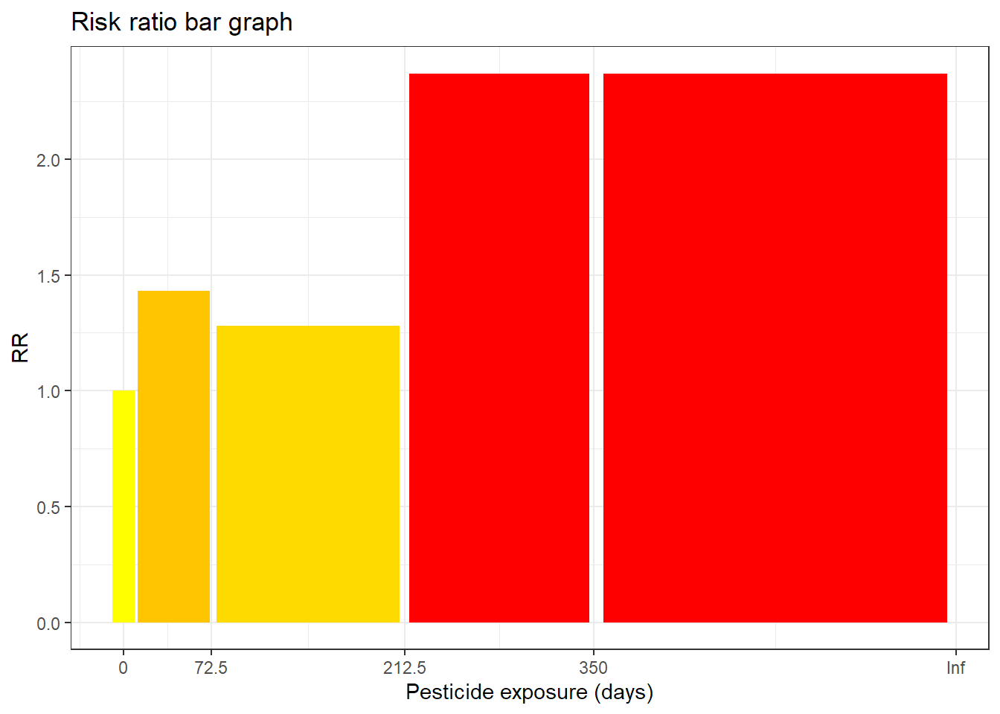
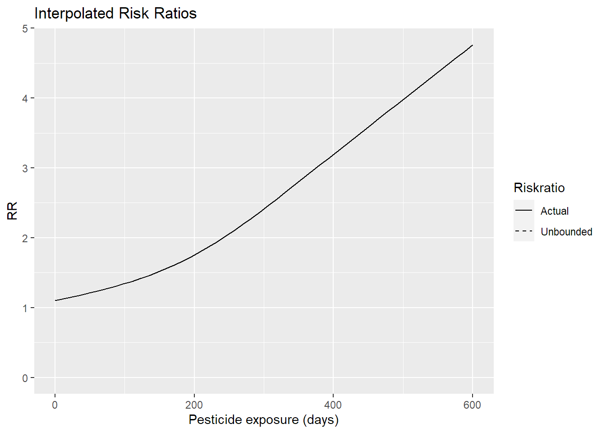

[auto-generated file]
Parkinsons is a death cause. It means that there is a certain probability that one dies from this.
In the model Parkinsons has the following risk factors
In 2014 Parkinsons was responsible for 0.994% of the deaths in the US. Below is a plot of how prevalent the death was for different ages (Xu et al. 2016)

The definition of dying from Parkinsons is to get any of the following ICD codes as the main cause of death on one’s death certificate. The percentage is the proportion of the deaths from Parkinsons who falls under the ICD code
The combined risk ratio of all risk factors is computed using the formula
\[ RR=RR_{\text{Coffee}} \cdot RR_{\text{Family Park.}} \cdot RR_{\text{Pesticides}} \]
The normalization factor is based on the joint distribution of all the risk factors and is computed using the formula
\[ P=P_{\text{Coffee}} \cdot P_{\text{Family Park.}} \cdot P_{\text{Pesticides}} \]
Coffee consumption is a risk factor for Parkinsons.
Below is a plot of the risk ratios we have taken from the literature alterated to fit our model

Because the variable Coffee consumption is numeric, we have computed a smoothed approximation. 
Family history parkinsons is a risk factor for Parkinsons.
Below is a plot of the risk ratios we have taken from the literature alterated to fit our model

Pesticide exposure is a risk factor for Parkinsons.
Below is a plot of the risk ratios we have taken from the literature alterated to fit our model

Because the variable Pesticide exposure is numeric, we have computed a smoothed approximation. 
“ICD Order Files 2014.” n.d. https://www.cdc.gov/nchs/icd/icd10cm.htm.
Xu, Jiaquan, Kenneth D Kochanek, Sherry L Murphy, and Betzaida Tejada-Vera. 2016. “Deaths: Final Data for 2014.” National Vital Statistics Reports 65 (4).